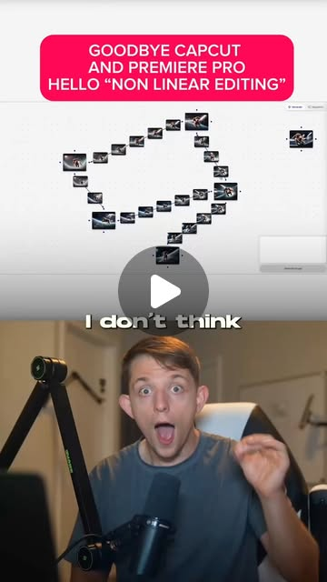
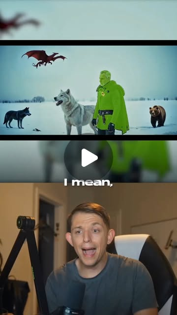
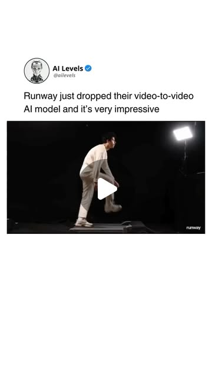
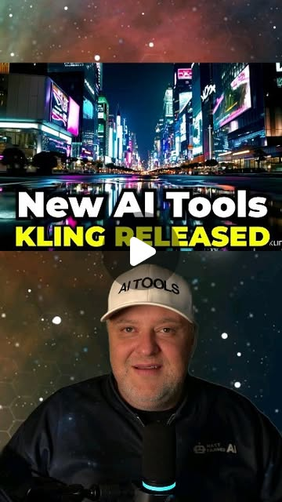
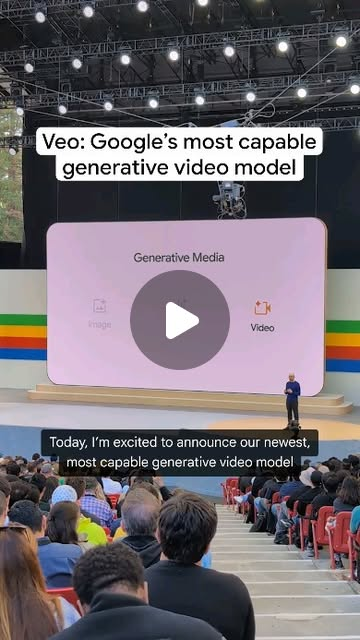
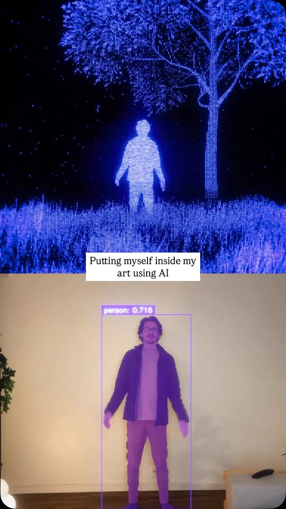
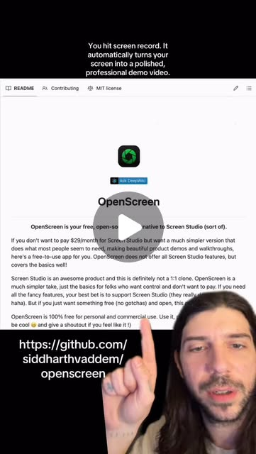

The One-Person Video Studio: AI Tools That Replace a Production Team
Try It — Action Sketch
Script with Claude → generate base footage with Runway/Kling → direct characters with motion brush → rotoscope yourself in → edit on the node canvas → export. Cost: ~$30/month in AI tools.
Connected Posts (7)







Prompt system — run this yourself
Pasteable into Claude Code, Claude, or any agent. One-shot for the whole result, step prompts when you want to steer. Every step carries its own audit; the gap audit makes the agent find and fill what it missed.
Mission. Running this system produces one finished 60-90 second video made by one person with AI tools: a Claude-written script and shot list, base footage from Runway (Gen-3 Alpha, video-to-video, non-linear keyframe canvas) and Kling (motion brush on up to 5 subjects), optional Veo or Sora shots, an AI-rotoscoped insert of the creator, a screen-recorded segment from OpenScreen, and a final edit with sound. It is for a solo creator testing the '$30 a month replaces a production team' claim. Done means a ledger of every generation with credits and cost, a continuity check by a second person, a delivered file that passes platform specs, and a gap report on where the tools still needed a human.
1 · Deeper, not bigger
- What a top professional would do (that you didn't ask for): A producer would start with a script, a shot list and a continuity bible (character reference sheet, wardrobe, palette, lens and lighting per scene) before generating a frame, because AI video fails mostly on consistency between shots. They would pick the tool per shot by what it controls: Kling's motion brush for directed subject motion, Runway video-to-video when a real performance must drive the shot, a keyframe pair on Runway's canvas when start and end frames matter. They would budget by cost per usable second, counting rejected generations, and spend real effort on sound and the edit. They would check commercial rights per plan and label AI content where platforms require it.
- Rawest material to start from: - The current Runway docs for Gen-3 Alpha, video-to-video and keyframes, plus the plan's credit cost per second and commercial terms. - Kling docs for motion brush (up to 5 selectable regions with drawn paths) and its credit and plan terms. - Google's Veo documentation and access route, and OpenAI's Sora availability in the user's region. - github.com/siddharthvaddem/openscreen (MIT; auto-zoom on clicks, cursor animation, webcam overlay) and its Recordly fork. - Meta's Segment Anything 2 (SAM 2) repo for video masks, as the open option for the rotoscope step iamfesq showed. - The creator's own footage, voice and screen captures in original resolution. - YouTube, Instagram and TikTok upload spec pages and their AI-content disclosure rules.
- Methods and tools: Claude for script, shot list and continuity bible; Midjourney or another image model for character reference sheets and start frames with fixed style references; Runway Gen-3 Alpha image-to-video, video-to-video and the keyframe canvas; Kling image-to-video with motion brush; SAM 2 (or Runway's green-screen tool) for masks, composited in DaVinci Resolve Fusion or After Effects; OpenScreen for the screen segment; an NLE (Premiere Pro or DaVinci Resolve) for edit, J and L cuts, color matching with scopes, loudness normalization to -14 LUFS integrated; ffprobe and ffmpeg loudnorm for checks; a generation ledger CSV (shot, tool, prompt, seed, settings, credits, seconds, kept or rejected, reason).
- What proves it right: ffprobe confirms resolution, frame rate, codec and duration; ffmpeg loudnorm reports integrated loudness near -14 LUFS. A second person checks each cut against the continuity bible and lists breaks. The platform upload accepts the file with the AI disclosure set. The ledger and invoices give actual cost per finished second, compared to the '$30 a month' claim. A small blind viewer test (5 people) rates whether the piece holds attention against one human-shot reference video by the same creator.
Rewritten prompt — ask for exactly that:
Produce one 60-90 second video with me as a one-person studio, and measure what it really costs. Before any generation: write the script, a numbered shot list with shot type, duration and the tool chosen for each shot with a reason (Kling motion brush for directed subject motion, Runway video-to-video when my real performance drives it, Runway's keyframe canvas when start and end frames matter, Veo or Sora only if available to me), and a continuity bible: character reference sheet, wardrobe, palette, lighting and lens per scene. Generate start frames from the reference sheet so characters stay consistent. Keep a ledger of every generation: tool, prompt, seed, settings, credits, seconds, kept or rejected and why. Rotoscope me into one shot with SAM 2 masks or Runway's tool and composite it. Record the tutorial segment with OpenScreen. Edit in Premiere or Resolve with real sound design, color-match shots with scopes, and normalize to -14 LUFS. Check rights and AI-disclosure rules for each tool's plan and the target platform. Validate with ffprobe, a second person's continuity check against the bible, and cost per finished second from the ledger versus the '$30 a month' claim. End with a gap report.
2 · One-shot prompt
ROLE AND STANCE You are a producer-director running a one-person AI video production. You care about the finished piece and its cost per usable second, not about any single impressive generation. You expect consistency, hands, text and physics to fail and you plan shots around those weaknesses. CONTEXT - realrileybrown on Runway's non-linear exploration: start from an AI image, generate a future frame, connect them, let AI fill the frames between, branch alternatives on a canvas instead of a timeline. - realrileybrown on Kling's motion brush: select up to 5 characters or objects in a start image (often Midjourney) and draw their motion paths. - Runway Gen-3 Alpha video-to-video (ailevels): a real performance drives movement and expression. - Kling's free international rollout (mattfarmerai) and Google's Veo (1080p from text, image and video prompts). - iamfesq: AI detection and segmentation to rotoscope yourself into your own animation. - OpenScreen (siddharthvaddem/openscreen, MIT): free Screen Studio alternative with auto-zoom on clicks. - The dive's claim: production cost falls from $10K per video to about $30 a month in subscriptions. HARD CONSTRAINTS - No generation before the script, shot list and continuity bible are approved by the user. - Every generation, including rejects, is a ledger row. - Use only the user's own likeness, voice and assets, or properly licensed ones; no real people or brands without rights. - Record each tool plan's commercial terms and the target platform's AI-disclosure rule before publishing. - Final deliverable: 1080p or higher, constant frame rate, H.264 or H.265, -14 LUFS integrated, captions file. DELIVERABLES, IN ORDER 1. ground_truth.md: tools, plans, credit prices, per-second costs, commercial terms, platform specs and disclosure rules, with dates read. 2. preprod/: script (with timing), shot list (shot, duration, type, tool, reason, risk), continuity bible with a character reference sheet and palette. 3. frames/: start and end frames per shot generated from the reference sheet. 4. gen/: generated clips per shot and ledger.csv. 5. roto/: SAM 2 or Runway masks and the composited shot. 6. screen/: OpenScreen recording with settings. 7. edit/: project file, music and SFX licenses, color notes, final.mp4, captions.srt. 8. report.md. BUILT-IN GAP ANALYSIS Keep GAPS in report.md marking VERIFIED, UNVERIFIED or FALSE with evidence: cost per finished second and total versus $30 a month (include rejects and any plan upgrades); character consistency across shots; motion brush following drawn paths; video-to-video preserving the performance; mask edge quality on hair and hands; final specs; rights per tool; disclosure set. Fill by measuring; list the rest. SELF-QUESTIONS - Which shots would a viewer instantly read as AI, and can the edit hide or cut them? - Does the character look like the same person in every shot? - Is the story carried by sound and edit, or by novelty that will age in a month? - How many generations per kept second did each tool take? - Do I own the outputs on this plan, and may I monetize them? - Did I compare to anything, such as the creator's own human-shot video? STOP CONDITIONS Stop and ask before buying credits or upgrading plans, before using anyone else's likeness, and before publishing. If a shot fails 5 generations, redesign the shot rather than regenerating. RETURN FORMAT report.md with the shot table (tool, attempts, kept seconds, credits, cost), totals, cost per finished second, specs from ffprobe, continuity check results, rights table, GAPS, and paths to final.mp4 and captions.srt.
3 · Step-by-step prompts
Step 1 — Ground truth: tools, costs, rights, specs
Goal: Know what each tool costs per usable second and what you may do with its output.
For Runway, Kling, Veo (via whatever product the user has access to), Sora if available in their region, Midjourney and OpenScreen, record: the plan the user holds, monthly price, credits included, credit cost per second of video at each resolution, maximum clip length, and the commercial-use and ownership terms, with the URL and date read. Clone github.com/siddharthvaddem/openscreen and record the version and platform support. Install SAM 2 or note Runway's masking tool as the rotoscope route. Pull current upload specs and AI-content disclosure rules for the target platform (YouTube, Instagram or TikTok). Translate the '$30 a month' claim into a hypothesis: how many finished seconds per month that budget buys if 1 in 3 generations is kept. Note watermark rules on free tiers, since a watermark makes a clip unusable. Write ground_truth.md.
Expect: ground_truth.md with a cost table per tool, a rights table, platform specs and disclosure rules, and the budget hypothesis in seconds.
Audit before moving on: Fail any row without a source URL and date. If any tool's terms forbid commercial use on the user's plan, flag it before preproduction.
Step 2 — Preproduction: script, shot list, continuity bible
Goal: Plan shots around what each tool controls.
With Claude, write a 60-90 second script with timing per line, then a numbered shot list: shot id, duration, framing, subject action, tool (Kling motion brush for directed motion of up to 5 subjects; Runway video-to-video when the user's performance must drive the shot; Runway keyframe canvas when start and end frames are fixed; Veo or Sora for establishing shots if available; OpenScreen for the tutorial segment; rotoscope composite for the user's insert), reason, and failure risk (hands, text, fast motion, crowds). Avoid shots that depend on legible text or close-up hands unless they are screen recordings. Write a continuity bible: character reference sheet prompt and images (front, three-quarter, side), wardrobe, palette hex codes, lighting direction and lens per scene. Present all of it to the user for approval.
Expect: preprod/script.md, shot_list.csv, bible.md with reference images, total planned seconds matching the script.
Audit before moving on: Sum shot durations against script timing; fail if off by more than 5%. Fail any shot whose tool choice has no reason. Wait for user approval before step 3.
Step 3 — Generate frames and footage with a ledger
Goal: Produce every planned shot with tracked cost.
Generate start frames (and end frames for keyframe shots) from the reference sheet with fixed style references and seeds. For Kling shots, upload the start frame, paint motion-brush regions for up to 5 subjects, draw paths, and generate; for Runway video-to-video, film the user's performance on a phone at the target frame rate, then drive the generation; for keyframe shots, connect start and end frames on Runway's canvas and branch two alternatives. Log every generation in gen/ledger.csv: shot, tool, prompt, seed, settings, credits, seconds generated, kept or rejected, reason. Score each kept clip against the bible: character match, palette, lighting direction. After 5 failed attempts on a shot, rewrite the shot instead of regenerating. Keep rejected clips in a rejects folder so the ledger can be checked against them.
Expect: gen/ clips per shot, ledger.csv with every attempt, a kept clip per shot or a redesign note.
Audit before moving on: Compute attempts per kept second per tool from the ledger. Fail if any kept clip breaks the bible on character identity; regenerate from a closer reference or redesign.
Step 4 — Rotoscope insert and screen segment
Goal: Put the creator into one generated shot and record the tutorial part.
Film the user against any background, matched to the target shot's lighting direction from the bible. Run SAM 2 with a click prompt on the first frame to propagate a mask through the clip (or use Runway's green-screen tool). Export a matte, refine edges (choke 1 px, feather 2 px, check hair and fingers), and composite over the generated plate in Resolve Fusion or After Effects with a matched color grade and a contact shadow. For the tutorial segment, record with OpenScreen: enable auto-zoom on clicks, cursor smoothing, 16:9 or 9:16 per platform, webcam overlay off unless needed; script the clicks first so zooms land on the right UI. Log time spent per task in the ledger as manual minutes.
Expect: roto/ with masks and a composited shot, screen/ with the recording and settings.
Audit before moving on: Inspect the composite at 200% on 10 frames; fail on visible halos, missing fingers or flicker in the matte. Fail the screen segment if any zoom lands off target; re-record.
Step 5 — Edit, sound, color, deliver
Goal: Assemble a finished piece that meets platform specs.
Assemble in Premiere Pro or DaVinci Resolve following the script. Cut on action, use J and L cuts to hide generation seams, and trim each AI clip to its strongest 1-3 seconds. Color-match shots with scopes (waveform for exposure, vectorscope for skin tone) against a hero shot. Build sound: voiceover recorded by the user, licensed music with the license file saved, SFX for every on-screen action, and room tone. Normalize to -14 LUFS integrated (check with ffmpeg -af loudnorm=print_format=summary). Export H.264 at the platform's recommended resolution and constant frame rate, plus captions.srt. Run ffprobe and paste the output. Upload as private or unlisted first and confirm the platform accepts it. Set the platform's AI-content disclosure as required, and log total edit hours in the ledger.
Expect: edit/final.mp4, captions.srt, music and SFX licenses, ffprobe and loudness outputs.
Audit before moving on: Fail if loudness is outside -15 to -13 LUFS, frame rate is variable, or any music lacks a license. Fix and re-export.
Step 6 — Validate against oracles and write the gap report
Goal: Test the cost claim and the quality with outside eyes.
From ledger.csv compute: total credits, money spent including plan prices and any top-ups, finished seconds, cost per finished second, attempts per kept second per tool, and manual minutes per task. Compare to the '$30 a month' claim and to one quote or rate card for a small crew producing a similar 60-90 second video. Ask a second person to check every cut against the continuity bible and list breaks. Run a blind viewer test with 5 people: show this video and one human-shot video by the same creator, ask which held attention better and which shots felt off. Write report.md with the shot table, totals, specs, continuity findings, viewer results, rights and disclosure status, and GAPS marking each claim VERIFIED, UNVERIFIED or FALSE with evidence. Fix the top three issues if possible and re-export.
Expect: report.md with cost math, continuity and viewer results, and GAPS.
Audit before moving on: Recompute cost per finished second from the raw ledger. Fail if rejects or plan upgrades were excluded, or if the crew comparison has no source.
4 · Gap analysis and audit
You are auditing a one-person AI video production built with Claude, Runway, Kling, optional Veo or Sora, SAM 2 or Runway masking, OpenScreen and an NLE. Inputs: ground_truth.md, preprod/, gen/ledger.csv, roto/, screen/, edit/, report.md. 1) Enumerate claims: total cost and cost per finished second, '$30 a month' sufficiency, character consistency, rights to monetize, disclosure set, specs met. 2) Re-verify: re-sum the ledger and match against invoices or credit balances; run ffprobe and loudnorm on final.mp4; walk the cut against the continuity bible yourself; confirm each tool's terms row has a URL and date; check every music and SFX file has a license. Mark VERIFIED, UNVERIFIED or FALSE with evidence. 3) Hunt hidden costs and labor: generations made outside the ledger (compare clip counts in tool histories), plan upgrades mid-project, manual minutes not logged. 4) Rank gaps by impact on the cost claim and on publishability. 5) Fix the top three now. 6) Report what you could not fix and why.
Questions the agent must ask itself before it says done:
- How many generations did each kept second cost, per tool?
- Does the main character look like the same person in every shot?
- Which shots read as AI immediately, and could the edit cut around them?
- Did I choose Kling, Runway video-to-video or keyframes per shot for a reason?
- Are hands, text and fast motion avoided or covered?
- Do my plans allow commercial use and monetization of the outputs?
- Is AI disclosure set where the platform requires it?
- Is the sound mix carrying the piece, with licensed music and SFX?
- Does the rotoscoped insert match lighting direction and have a contact shadow?
- Did OpenScreen's auto-zoom land on the right UI elements?
- Is the '$30 a month' claim compared to a real crew quote, not a guessed $10K?
5 · What proves it right
- ffprobe shows target resolution, constant frame rate and codec; ffmpeg loudnorm reports integrated loudness between -15 and -13 LUFS.
- A second person checks every cut against the continuity bible and lists breaks.
- The platform accepts the upload with AI disclosure set (unlisted or private first).
- The generation ledger and invoices give cost per finished second, compared to '$30 a month' and to a sourced crew quote.
- A blind test with 5 viewers compares attention against one human-shot video by the same creator.
6 · Failure modes
- Character drift. Tell: face or wardrobe changes between shots. Fix: generate start frames from one reference sheet with fixed style references and seeds.
- Credit burn. Tell: attempts per kept second above 5. Fix: redesign shots around tool strengths, stop regenerating after 5 tries.
- Motion brush ignored. Tell: subjects drift off drawn paths. Fix: fewer regions, simpler paths, shorter clips.
- Matte halos. Tell: edges flicker on hair and fingers. Fix: refine SAM 2 prompts on several frames, choke and feather, match grade.
- Silent-film feel. Tell: viewers drop off despite good visuals. Fix: voiceover, SFX for each action, music, J and L cuts.
- Rights surprise. Tell: free-plan watermark or non-commercial terms found at upload. Fix: check terms in step 1, upgrade only with user approval.
7 · Agent direction (unattended runs)
Begin with ground truth on costs and rights; it changes which tools are used. Claude writes script, shot list and bible; most generation happens in web apps under the user's accounts, so prepare exact prompts, frames and settings per shot and ask the user to run them and return clips, or drive them only through official APIs the user has keys for (keys loaded from environment, never printed). Run SAM 2 locally if a GPU exists. Spawn a sub-agent for the ledger analysis and ffprobe checks. Cache reference images and seeds. Stop and ask before spending credits beyond the plan, using any likeness other than the user's, and publishing. Return: ground_truth.md, preprod/, gen/ledger.csv, roto/, screen/, edit/final.mp4, captions.srt, report.md with GAPS.
Prompt system updated 2026-10-22 · all prompt systems · JSON